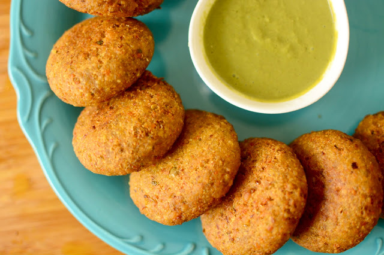

Rice vegetable cutlet with left over rice-This cutlet is prepared with left over rice. We can easily prepare this healthy cutlet with available ingredients in home. If rice is left over we don't have to worry and think what to do with rice. This cutlet provides as a healthy snack for evening.

Ingredients
1 cupFinely chopped potatoes
1/2 cupFinely chopped french beans
1/2 cup Finely chopped carrot
1/2 cupFinely chopped cabbage
2 TbspOil
1/2 cupFinely chopped onions
Salt to taste
1/2 tspChilli powder
1/4 tspTurmeric powder (haldi)
2 TbspPlain flour (maida)
1/2 cupPlain flour (maida) dissolved in 3/4 cup
Bread crumbs for rolling
Oil for deep-frying
Preparation
To make vegetable cutlets, heat the oil in a deep non-stick, add the onions and sauté on a medium flame for 1 minute.
Add all the potatoes, french beans, carrots and cabbage and mix well.
Cover and cook on a slow flame for 10 to 12 minutes or till the vegetables are cooked, while stirring occasionally. Sprinkle a little water (approx. 2 tbsp) to avoid the vegetables from burning.
Add the salt, chilli powder, turmeric powder and plain flour, mix well and sauté on a medium flame for 1 to 2 minutes.
Mash the mixture using a potato masher.
Remove from the flame, transfer the mixture to a plate and allow it to cool completely.
Divide the mixture into 7 equal portions and shape each portion into a 50 mm. (2”) flat oval.
Dip each cutlet in the prepared plain flour mixture and roll in the bread crumbs till they are evenly coated from all the sides.
Heat the oil in a kadhai and deep-fry each vegetable cutlet till it turns golden brown in colour from both the sides. Drain on absorbent paper.
Serve the vegetable cutlets immediately with tomato ketchup.